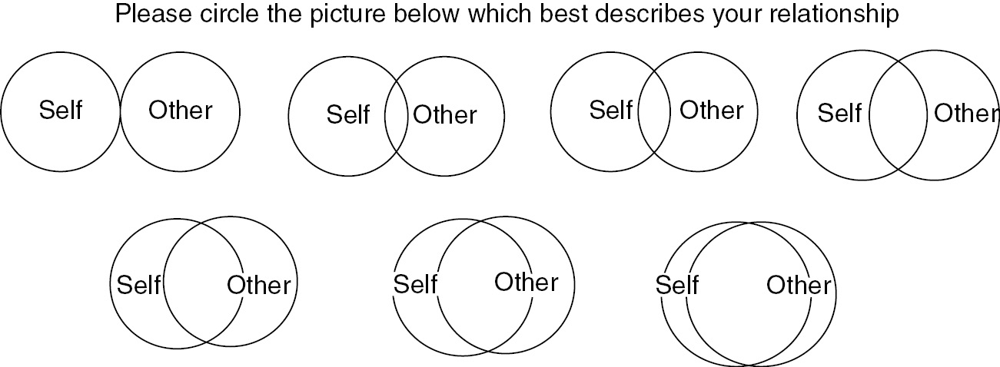
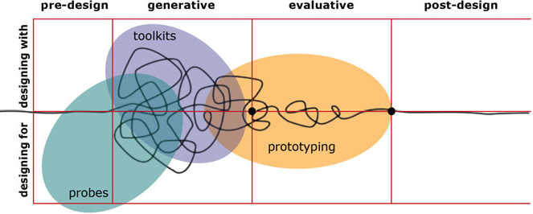
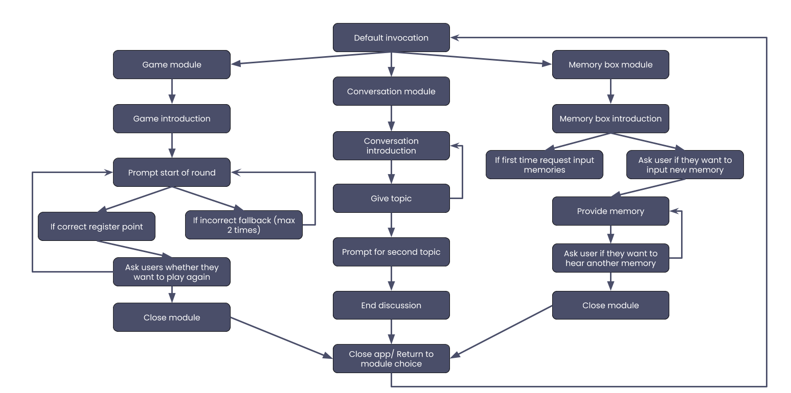

Focus
well-being, voice-user interfaces, participatory design, smart assistants, romantic relationships
Problem area
There is an increased prevalence of technology in our lives that, at times, seems to further separate us
rather than make us get closer even if we are able to connect more easily with each other. Well-being seems to be decreasing
as it can be seen from the high number of reports concerning mental health and disconnectedness. One of the most effective ways
of countering these effects is self-disclosing to your peers. In this we found a possible area that can contribute to the betterment
of this situation by using a voice-user interface technology to facilitate such interactions.
Approach
Even though we have been able to communicate from the beginning of mankind,
with the introduction of technology we seem to have become increasingly unskilled in doing this.
Because of this we started to look at current research on this topic and found that self-disclosure
might be an appropriate tool to use in this situation. Our aim was to accommodate self-disclosure by using a voice-user interface,
seeing as verbal communication is still the best way of increasing closeness and intimacy.
Research
For the next stage of the study we became more focused on a particular group of users: romantic partners living together.
This decision was taken because for the first half of the study the results also showed that we lacked an appropriate context for the introduction of
this technology. Smart devices are mostly present in homes, and as several statistics showed couples were among the majority of the owners.
From this, we inferred that this particular group would benefit most from using this. During this phase we also stepped away from the user-centered approach
that we had in the first stage to a participatory approach seeing as we were moving the study into private homes and we wanted to create a relaxed environment,
where the participants were also our partners and through their contribution they also accumulated knowledge and shared a sense of responsibility for the outcome.
We divided the research into two parts, the first one by deploying a smart device with a developed application into six homes, and the second one in the form of a
digital design workshop.
During each session, two participants came into the room and interacted with each other by answering a series of 25 questions posed by the device. Before and after the activity they were asked to fill an IOS scale in order for us to measure whether their perceived closeness would increase. The sessions were followed by semi-structured interviews to get the participants thoughts on the interaction and create a complete image of the activity.
During each session, two participants came into the room and interacted with each other by answering a series of 25 questions posed by the device. Before and after the activity they were asked to fill an IOS scale in order for us to measure whether their perceived closeness would increase. The sessions were followed by semi-structured interviews to get the participants thoughts on the interaction and create a complete image of the activity.
Findings
The findings showed that for groups that were formed out of strangers there was a greater increase in closeness,
according to the results from the IOS scale. This scale however provided us with inconclusive results in regards to the participants that
had a more intimate relationship, seeing as most pairs already checked the highest level in closeness prior to the session.
However, these groups revealed during the interview the session had a positive impact and it made them relieve memories and reflect on their relationship.
The results from this initial exploratory observation indicated that the smart assistant could prove to be a good facilitator of interaction in face-to-face
interactions, but further research in order to find more specific design guidelines was needed.
Design
For the next stage of the study we became more focused on a particular group of users: romantic partners living together.
This decision was taken because for the first half of the study the results also showed that we lacked an appropriate context for the introduction
of this technology. Smart devices are mostly present in homes, and as several statistics showed couples were among the majority of the owners.
From this, we inferred that this particular group would benefit most from using this. During this phase we also stepped away from the user-centered
approach that we had in the first stage to a participatory approach seeing as we were moving the study into private homes and we wanted to create a
relaxed environment, where the participants were also our partners and through their contribution they also accumulated knowledge and shared a sense
of responsibility for the outcome. We divided the research into two parts, the first one by deploying a smart device with a developed application into
six homes, and the second one in the form of a digital design workshop.
We started in a ”designing for users” phase with the aim of providing the participants with knowledge on the capabilities of smart assistants and allow them to gather experiences that they would reflect upon in a later stage. The deployment period lasted one month because only a long-term study could uncover behavioural changes. We maintained close contact with all the couples and carried out three semi-structured interviews throughout this period. We chose interviews as the main data gathering method because we wanted to adopt a minimally intrusive method, seeing as we were already invading the participant’s private space.

We started in a ”designing for users” phase with the aim of providing the participants with knowledge on the capabilities of smart assistants and allow them to gather experiences that they would reflect upon in a later stage. The deployment period lasted one month because only a long-term study could uncover behavioural changes. We maintained close contact with all the couples and carried out three semi-structured interviews throughout this period. We chose interviews as the main data gathering method because we wanted to adopt a minimally intrusive method, seeing as we were already invading the participant’s private space.
We designed a technology probe, in the form of a smart device application, which was divided into three modules, each with a different purpose,
but open enough so that the participants could use it how they saw fit.
The first module was created to facilitate conversation with the purpose of providing the participants with topics for conversation. This was similar to the way in which we developed the initial exploratory study, where it was revealed that this was a good way of enabling self-disclosure.
The second module took the form of a rudimentary game where the participants were encouraged to self-disclosure in a more lightweight manner. After the exploratory stage, where for some of the session we introduced game-like elements in the interaction, we decided we should further explore whether self-disclosure would be more effective when masked by activities in the form of entertainment.
The last module was intended as a memory board where participants could vocally register their thoughts and relieve them at a later time. The purpose behind this was to explore whether an uncommon method would encourage participants to self-disclose.

The first module was created to facilitate conversation with the purpose of providing the participants with topics for conversation. This was similar to the way in which we developed the initial exploratory study, where it was revealed that this was a good way of enabling self-disclosure.
The second module took the form of a rudimentary game where the participants were encouraged to self-disclosure in a more lightweight manner. After the exploratory stage, where for some of the session we introduced game-like elements in the interaction, we decided we should further explore whether self-disclosure would be more effective when masked by activities in the form of entertainment.
The last module was intended as a memory board where participants could vocally register their thoughts and relieve them at a later time. The purpose behind this was to explore whether an uncommon method would encourage participants to self-disclose.
After the deployment period we started to move into a “designing with users” phase by doing a digital workshop with some of the pairs from
the study in order to uncover design directions. For this we used “Make-Tell-Enact” activities (Sanders, year) specific to participatory design.
The main outcome of the workshop consists of a series of collages made by each pair encompassing their vision for the design of an ideal voice-user
interface for self-disclosure.

Constraints
One of the main challenges we encountered appeared in the second part of the study where,
due to current global restrictions, we were unable to meet with the participants.
We accommodated this by moving away from both face-to-face interviews and workshops, and transposing them in a digital environment.
This on one hand offered a more relaxed platform for carrying out the study, but on the other hindered some of the activities from the workshop,
which could have brought up other types of results.
We also encountered difficulties relating to our choice in platform, the Google Nest Mini.
The “command-response” interaction created some usability issues, but at the same type provided a clear overview on what are the current
development possibilities with the technology at hand.
Outcome
- There is an expectation that smart devices should also respond to non-verbal cues
- The motivation behind using this should clearly be outlined or masked by simpler goals, such as wining a game
- The application should make use of other compatible devices to become more seemlesly included in the ecology of the home